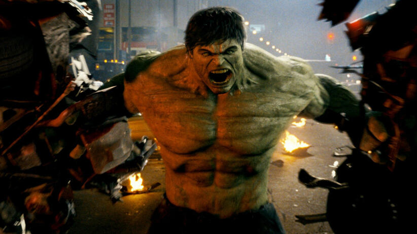

Hulk (alter ego Robert Bruce Banner) – fikcyjna postać (superbohater) występująca w komiksowych publikacjach wydawnictwa Marvel Comics, oraz różnego rodzaju adaptacjach. Twórcami postaci są Stan Lee i Jack Kirby. Pierwszy raz Hulk pojawił się w pierwszym numerze serii komiksowej The Incredible Hulk vol. 1 #1 z maja 1962 roku[1][2]. W zamyśle twórców, Hulk miał być kwintesencją ludzkiej wściekłości, oraz miał symbolizować amerykańską tendencję do agresywności, a także dążenie do samozniszczenia i antyintelektualizmu[1]. Inspiracją dla postaci był główny bohater powieści Doktor Jekyll i pan Hyde (Strange Case of Dr Jekyll and Mr Hyde) autorstwa Roberta Louisa Stevensona, potwór z powieści Frankenstein (Frankenstein, or The Modern Prometheus) napisanej przez Mary Shelley, jak również główny bohater filmu Zdumiewająco kolosalny człowiek (The Amazing Colossal Man)[1]. Hulk jest alter ego doktora Roberta Bruce'a Bannera, obiecującego młodego fizyka. Podczas pracy nad promieniowaniem gamma zdarzył się wypadek, w trakcie którego Banner został napromieniowany, co zaowocowało niekontrolowanymi transformacjami w Hulka – wielkiego, humanoidalnego stwora o nadludzkiej sile i wytrzymałości, nad którym Banner nie ma właściwie żadnej kontroli. W komiksie częstym motywem jest pościg policji i armii Stanów Zjednoczonych za Hulkiem i Bannerem, odpowiedzialnych za wywołanie ogromnych zniszczeń, gdziekolwiek się pojawiali. W trakcie długiej historii komiksu skóra Hulka była najczęściej zielona, ale na skutek różnorodnych zwrotów fabularnych, bywała także szara i czerwona. Za sprawą pisarza Petera Davida wyjaśniono, iż szaleństwo zielonego potwora jest skutkiem traumatycznych przeżyć z dzieciństwa Bruce'a, który był wówczas ofiarą przemocy domowej, a sama przemiana, do której dochodzi pod wpływem emocji jest wyrazem długo tłumionego gniewu[1][2]. Zielony olbrzym jest również członkiem elitarnej grupy superherosów o nazwie Avengers[1][2]. Hulk jest jedną z najbardziej rozpoznawalnych postaci z Marvel Comics. Poza komiksem postać Hulka pojawiała się w różnego rodzaju adaptacjach. W wersji aktorskiej pierwszy raz pojawił się w serialu telewizyjnym, gdzie rolę Doktora Bannera zagrał Bill Bixby, a Hulka Lou Ferrigno. Poświęcono mu też kilka seriali animowanych m.in. The Marvel Super Heroes z 1966 roku, The Incredible Hulk z lat 1982-1983, The Incredible Hulk z lat 1996-1997, oraz Avengers: Potęga i moc (The Avengers: Earth's Mightiest Heroes) z lat 2010-2013. Powstały też solowe dwa filmy kinowe: Hulk (The Hulk) z 2003 w reżyserii Anga Lee z Erikiem Baną w roli Doktora Bannera oraz Incredible Hulk (Incredible Hulk) z 2008 w reżyserii Louisa Leterriera, z Edwardem Nortonem w roli Bannera, który zapoczątkował wspólną serię filmów (Filmowe Uniwersum Marvela). W 2012 do kin wszedł film w reżyserii Jossa Whedona pod tytułem Avengers (The Avengers), w którym Mark Ruffalo (w polskiej wersji językowej Grzegorz Damięcki) zastąpił Edwarda Nortona w roli doktora Bannera[3]. Mimo iż superprodukcja odniosła ogromny sukces, postać Hulka ma nie doczekać się kolejnego solowego filmu i powróci dopiero w kontynuacji filmu Avengers pod tytułem Avengers: Age of Ultron[4][5]. W zestawieniu 50 najlepszych postaci komiksowych magazynu filmowego Empire, Hulk zajął 14. miejsce[6]. Natomiast w zestawieniu 100 najlepszych komiksowych bohaterów amerykańskiego portalu internetowego IGN, bohater uplasował się na 9. miejscu[7].
